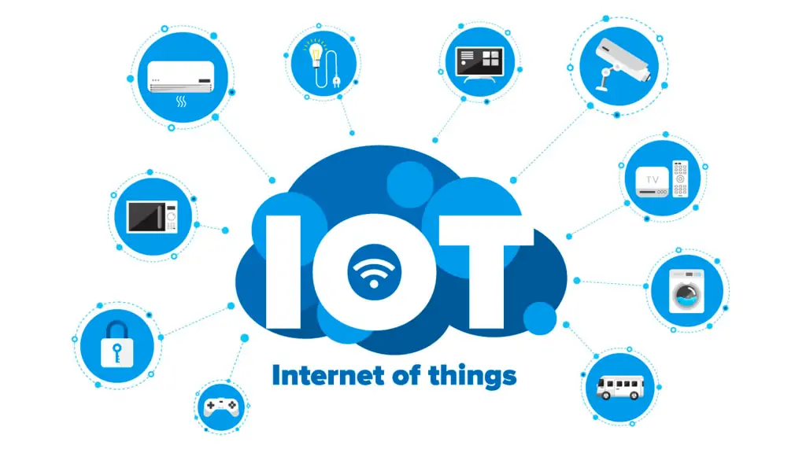

Evolução das redes de computadores
A Era Moderna das Redes: Mobilidade, Nuvem e IoT
A partir dos anos 2000, as redes de computadores evoluíram com foco em mobilidade, alta velocidade e serviços em nuvem. Tecnologias como Wi-Fi, 4G/5G e fibra óptica transformaram
o modo como pessoas e empresas acessam e compartilham dados.
Além disso, a Internet das Coisas (IoT) tornou possível conectar objetos físicos à Internet — como eletrodomésticos, câmeras, sensores e veículos — promovendo cidades inteligentes
e automação residencial.Os serviços em nuvem também permitiram o armazenamento e processamento remoto de dados, facilitando o trabalho colaborativo, o acesso móvel e a escalabilidade de serviços digitais.

Ir pro início
Voltar tópico